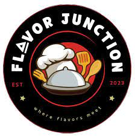

Dear Food Enthusiasts,
Welcome to Flavor Junction—where every bite is a journey, and every dish tells a story. At Flavor Junction,
we believe that great food has the power to bring people together, create memories, and nourish both the
body and soul.
Our menu is a carefully curated selection of dishes that span flavors, textures, and culinary traditions
from around the world. Whether you're here for a casual lunch, a cozy dinner, or a special celebration, we
promise a dining experience that will leave you delighted and craving for more.
We are committed to using the freshest ingredients, locally sourced and sustainably grown, to craft meals
that are not just delicious but also mindful of our planet. Our chefs infuse passion and creativity into
every dish, ensuring that you savor the very essence of flavor with each bite.
Thank you for choosing Flavor Junction as your culinary destination. We hope you enjoy your time here as
much as we enjoy bringing these flavors to your table.
Bon Appétit!
Warm regards,
The Flavor Junction Team